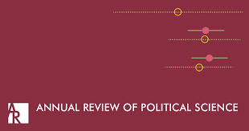
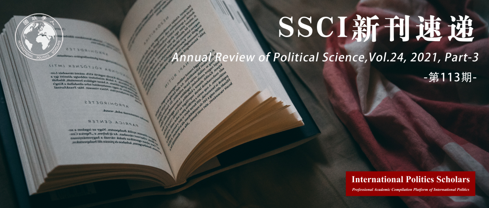

收录于合集
#新刊速递 123 个
#政治科学年度评论 3 个


期刊简介
《政治科学年度评论》（ Annual Review of Political Science ）是一份1998年起发行的同行评审学术期刊，由Annual Reviews出版。该期刊每年出版1次，内容为对政治学研究重要进展的综述。据2021年发布的期刊引证报告指，《政治科学年度评论》的影响因子为8.091，在182份政治科学类的期刊排名第2位。今天向读者推荐2021年《政治科学年度评论》第3部分。

本期目录
1. 民族主义：我们了解的，和我们仍需要了解的
Nationalism: What We Know and What We Still Need to Know
2. 美国地方政府中的政党与意识形态：一种评估
Party and Ideology in American Local Government: An Appraisal
3. 国家能力较低且不均衡下的社会保障与国家-社会关系
Social Protection and State–Society Relations in Environments of Low and Uneven State Capacity
4. 美国政治行为研究中持续存在的种族与阶级两难困境
The Continuing Dilemma of Race and Class in the Study of American Political Behavior
5. 冲突相关的性暴力
Conflict-Related Sexual Violence
01
民族主义：我们了解的，和我们仍需要了解的
题目： Nationalism: What We Know and What We Still Need to Know
作者： Harris Mylonas, 乔治华盛顿大学政治科学系副教授，研究方向为国家与民族建构，以及政治发展；Maya Tudor, 牛津大学布拉瓦尼克政府学院副教授，研究方向为发展中国家的民主化过程。
摘要：
****在民族主义政府在全球复苏的背景下，我们对民族主义了解多少？本文回顾了政治科学关于民族主义的辩论，批判性地评估我们已经知道的和我们仍然需要知道的内容。首先，我们对经典辩论进行了综述，并追溯了当前共识的起源，即民族是历史偶然和社会建构形成的。然后，我们强调了当代民族主义研究的三个趋势：（1）比较历史研究，将民族主义视为一种宏观政治力量，挖掘民族、国家、构成故事和政治冲突之间的关系；（2）行为研究，利用调查数据和实验来衡量对民族依赖形成的原因和影响；（3）民族志研究，阐明了使民族归属永久化的日常过程和实践。倒数第二部分简要总结了哲学、历史和社会心理学的相关见解，并指出了政治科学家完全有能力解决的知识缺口。最后一部分呼吁对民族主义进行更多的比较、跨学科、跨地区的研究。
自新冠肺炎疫情爆发以来，民族主义在全球范围进一步呈现复兴态势。民族主义对各国政府政策制定的影响也越来越大。尽管多数学者认为民族主义在当今国际社会中的一种消极现象，但作者认为，从历史上看，民族主义并不总是作为一股消极力量存在。作者将民族主义视为一种多向度的政治现象，是人类在社会中建构自我认知的过程中产生的一个自然结果。在这种情况下，民族主义既可以呈现为一种大众化的集体政治行动，也可能作为一种精英式的智识活动而存在。作者因此认为，对民族主义的研究应避免单纯的意识形态批判，而应当向跨文化，跨学科方向发展，以帮助社会更好的了解这一正重新回归主流政治视野的政治现象。
Amid the global resurgence of nationalist governments, what do we know about nationalism? This review takes stock of political science debates on nationalism to critically assess what we already know and what we still need to know. We begin by synthesizing classic debates and tracing the origins of the current consensus that nations are historically contingent and socially constructed. We then highlight three trends in contemporary nationalism scholarship: (a)comparative historical research that treats nationalism as a macropolitical force and excavates the relationships between nations, states, constitutive stories, and political conflict; (b) behavioral research that uses survey data and experiments to gauge the causes and effects of attachment to nations; and (c) ethnographic scholarship that illuminates the everyday processes and practices that perpetuate national belonging. The penultimate section briefly summarizes relevant insights from philosophy, history, and social psychology and identifies knowledge gaps that political scientists are well-positioned to address. A final section calls for more comparative, cross disciplinary, cross-regional research on nationalism.
02
美国地方政府中的政党与意识形态：一种评估
题目： Party and Ideology in American Local Government: An Appraisal
作者： Sarah F·Anzia，加州大学伯克利分校特拉弗斯政治科学系和高盛公共政策学院。
摘要： 几十年来，学界对美国地方政治的研究都在强调地方政府的特殊性，但这种情况已经开始改变。近年来，关于党派和意识形态的新数据改变了学界对地方政治的研究。随后的许多学术研究认为，地方政治类似于州和国家政府的党派和意识形态政治。但本文认为，得出这样的结论还为时过早。到目前为止，这些新的文献对美国地方政府制定的政策还不够关注，也未注意到它们大多与主导国家政治的问题不同。未来，学者应该率先处理在这些地方政府问题上的测量偏好；提出地方政治分歧何时以及为何能够反映国家党派和意识形态的理论；探究为什么一些地方政策与国家党派和意识形态之间会存在联系，以及这些联系是否也存在于地方政府的核心问题中。
For decades, research on US local politics emphasized the distinctiveness of local government, but that has begun to change. In recent years, new data on partisanship and ideology have transformed the study of local politics. Much of the ensuing scholarship has concluded that local politics resembles politics in state and national governments: partisan and ideological. I argue that such a conclusion is premature. So far, this newer literature has been insufficiently attentive to the policies US local governments make—and to the fact that they are mostly different from the issues that dominate national politics. Going forward, scholars should prioritize measurement of preferences on these local government issues, develop theories of when and why local political divisions will mirror national partisanship and ideology, and investigate why there are links between some local policies and national partisanship and ideology—and whether those links also exist for core local government issues.
03
国家能力较低且不均衡下的社会保障与国家-社会关系
题目： Social Protection and State–Society Relations in Environments of Low and Uneven State Capacity
作者： Alik-Lagrange,世界银行经济学专家；Sarah K. Dreier，新墨西哥大学政治学系助理教授；Milli Lake, 伦敦政治经济学院国际关系系副教授；Alesha Porisky，北伊利诺伊大学政治学系助理教授。
摘要： 基于被统治者和统治者之间关系的社会契约思想，向公民提供社会福利历来是建立在对国家权力默许的期望之上的。对撒哈拉以南非洲地区国家福利基金的社会援助迅速增多，而这些援助往往是由全球捐助者通过技术援助项目提供。然而，这引发了脆弱和低国家能力下社会保障和社会契约之间的大量问题。本综述以撒哈拉以南非洲地区为研究对象，借鉴了世界各地有关社会保障的理论和实证文献，分析了社会保障方案对公民国家关系的再分配、契约和重构效应。我们认为，计划的特征——包括目标、条件、问责机制、官僚覆盖面以及国家- 非国家伙伴关系的性质和可见性——与现有的国家-社会关系相互作用，为不同处境的人口产生不同的社会契约结果。
Grounded in social-contractual ideas about relationships between the governed and those who govern, the provision of social benefits to citizens has historically been predicated on expectations of acquiescence to state authority. However, the rapid expansion of noncontributory social assistance in sub-Saharan Africa, often supported by global donors through technical assistance programs, raises myriad questions about the relationship between social protection and the social contract in fragile and low-capacity contexts. Focusing on sub-Saharan Africa, but drawing on the theoretical and empirical literature on social protection from around the world, this review parses out the redistributive, contractual, and reconstitutive effects of social protection programming on citizen–state relations. We argue that program features—including targeting, conditionality, accountability mechanisms, bureaucratic reach, and the nature and visibility of state–nonstate partnerships—interact dialectically with existing state–society relationships to engender different social contract outcomes for differently situated populations.
04
美国政治行为研究中持续存在的种族与阶级两难困境
题目： The Continuing Dilemma of Race and Class in the Study of American Political Behavior
作者： Fredrick C. Harris, 哥伦比亚大学社会科学系主任、政治学系教授；Viviana Rivera-Burgos, 纽约城市大学巴鲁克学院政治学系助理教授。
摘要： 这篇文章追溯了美国政治行为中种族与阶级研究的发展过程。本文首先挑战了美国例外论的论点，特别是其关于社会阶级作用微乎其微与对于种族讨论不足的前提。紧接着，本文批判性地回顾了关于美国政治行为的传统学术研究及其对社会阶层客观指标作为政治偏好与参与的预测的依赖。本文还强调了那些将阶级视为一种重要社会身份并因此对其进行主观度量的研究。之后，本文讨论了身份研究在种族、族群与政治（REP）领域的激增，以及朝着很少包含社会阶层的交叉方法的转向。文章最后讨论了少数几个重视种族与阶级交叉的研究，并强调需要更多这类研究来推进我们对当代美国政治行为的理解。
This article traces the development of the study of race and class in American political behavior. It starts by challenging the American exceptionalism thesis, particularly its premises regarding the diminutive role of social class and the absence of serious discussions about race. It then critically reviews the conventional scholarship on American political behavior and its reliance on objective indicators of social class as predictors of political preferences and participation. The article also highlights studies that have conceived of class as an important social identity and have thus measured it subjectively. It then discusses the surge of identity studies in the field of race, ethnicity, and politics (REP) and the turn toward an intersectional approach that rarely includes social class. The article ends with a discussion of the handful of studies that do consider the intersections of race and class, and underscores the need for more research of this type to advance our understanding of contemporary American political behavior.
05
冲突相关的性暴力
题目： Conflict-Related Sexual Violence
作者： Ragnhild Nordås，美国密歇根大学政治学系助理教授；Dara Kay Cohen，哈佛大学肯尼迪政府学院教授。
摘要： 本文考察了政治学中关于战时针对平民的性暴力（包括强奸、性奴役、强迫婚姻和其他形式）的实证性文献出现的显著增长。受前南斯拉夫和卢旺达冲突的影响，早期的研究倾向于将这些形式的暴力描述为不可避免的、无处不在的、见机起意的或有策略性的。然而，最新文献和数据来源记录了不同国家、不同冲突、不同施暴者、不同受害者和幸存者的性暴力的巨大差异。在这种能观察到的差异的基础上，学者们发展并检验了大量关于何时、何地、为何及在何种条件下发生性暴力及其后果的理论。本文强调了文献回顾中的核心发现，解释了专家之间的主要争论，并探讨了未来研究的几个途径。最后，本文详细介绍了对战时性暴力的研究（包括研究结果和研究过程）能够为其他政治学家提供什么更普遍意义上的帮助。
This article reviews the remarkable growth in empirical literature in political science on wartime sexual violence against civilians, including rape, sexual slavery, forced marriage, and other forms. Early work, motivated by ongoing conflicts in the former Yugoslavia and Rwanda, tended to portray these forms of violence as inevitable, ubiquitous, and either opportunistic or strategic. However, recent literature and new data sources have documented substantial variation in sexual violence across countries, conflicts, perpetrators, and victims and survivors. Building on this observed variation, scholars have developed and tested a wealth of theories about when, where, why, and under what conditions sexual violence occurs as well as its consequences. We highlight the core findings from the literature, explain the key debates among experts, and explore several avenues for future research. We conclude by detailing what the study of wartime sexual violence—both the findings and the research process—offers to a broader set of political science scholars.
编译 | 刘培晨 闫一苇 谭伟业 郑敖天 戎秦婴
责编 | 李思 李博轩 邵良 姚寰宇 王星澳
排版 | 黄紫蓝 云琪布日
文章观点不代表本平台观点，本平台评译分享的文章均出于专业学习之用, 不以任何盈利为目的，内容主要呈现对原文的介绍，原文内容请通过各高校购买的数据库自行下载。

国政学人
支持学术公益与知识传播
微信扫一扫赞赏作者 __赞赏
已喜欢，对作者说句悄悄话
取消 __
发送给作者
发送
最多40字，当前共字
上一页 1/3 下一页
长按二维码向我转账
支持学术公益与知识传播
受苹果公司新规定影响，微信 iOS 版的赞赏功能被关闭，可通过二维码转账支持公众号。